tools/art/kit*.py, which removes the object outline proposed below and redraws the cast,
terrain, sky and UI. The live captures under “Live → proposed” are from the current build; the concept
boards are kept for comparison. See REVIEW_NOTES.md.
Title screen / front door
A clear four-door menu makes the game’s activities feel like places to go, with the course running behind the logo.
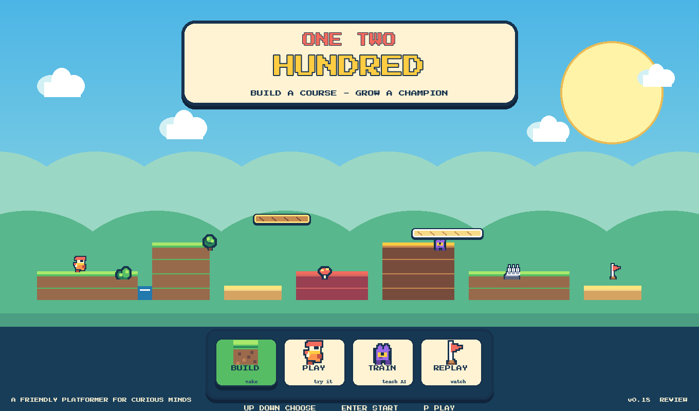
Build mode / course maker
The editor becomes a toy workbench: a category palette, a large playfield, and a brush card that explains the part in plain language.
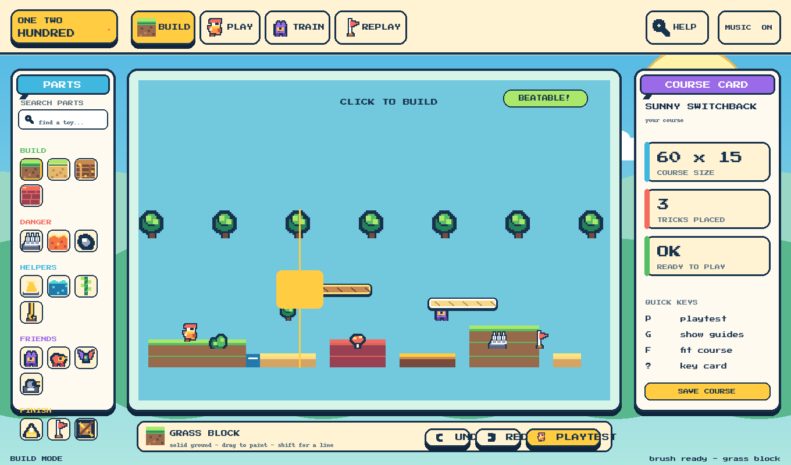
Training mode / the AI lab
Training gets a stage, a readable progress card, and a celebration loop so watching the population learn feels like a game activity.
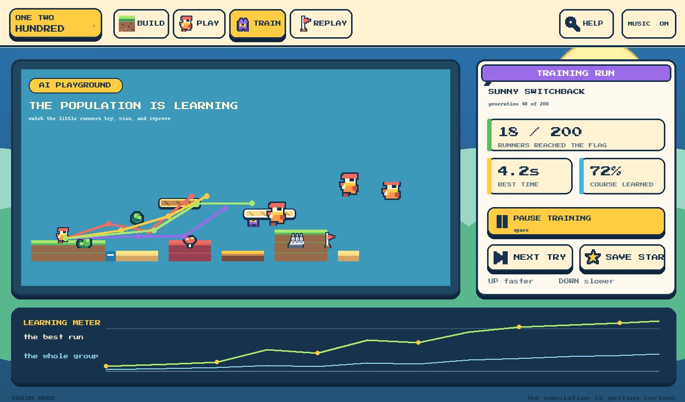
Play mode / human HUD
The human run gets a compact HUD that stays out of the way while making time, goal, and ghost status feel like game feedback.
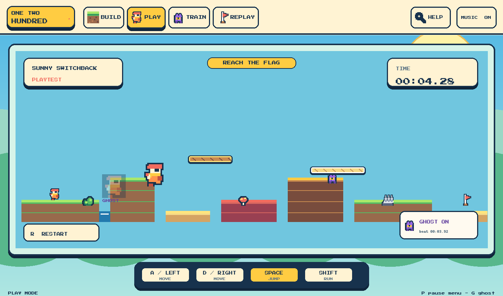
Replay mode / the highlight reel
The best run is framed as a star performance, while the population becomes a readable ghost field instead of a gray smear.
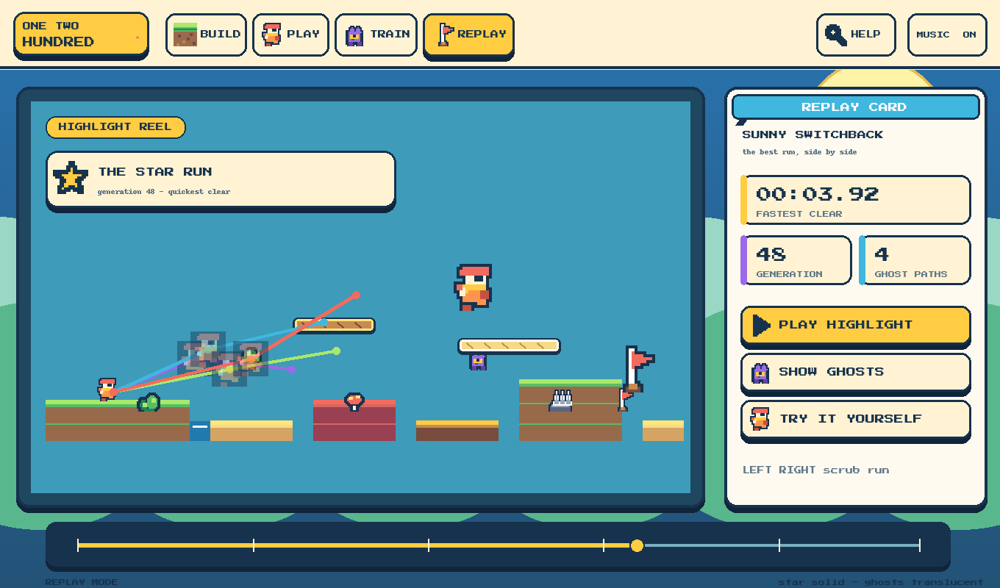
Graphic asset pass
A representative review atlas covering the full art vocabulary: terrain, hazards, traversal pieces, enemies, characters, dressing, effects, and application glyphs.
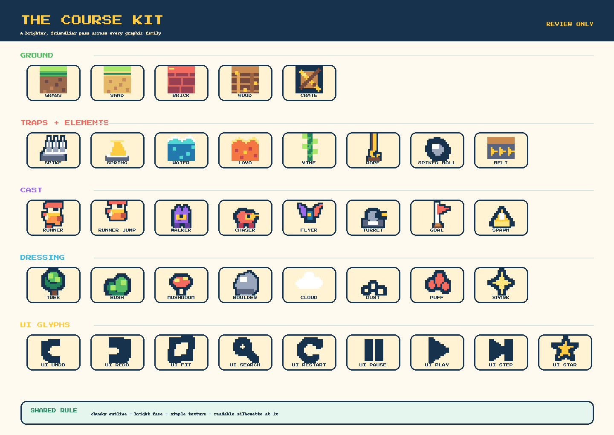
Surface tiling test
Terrain is judged as a repeating material, not as a single icon. These rows intentionally remove object outlines and show the candidate cells edge to edge.
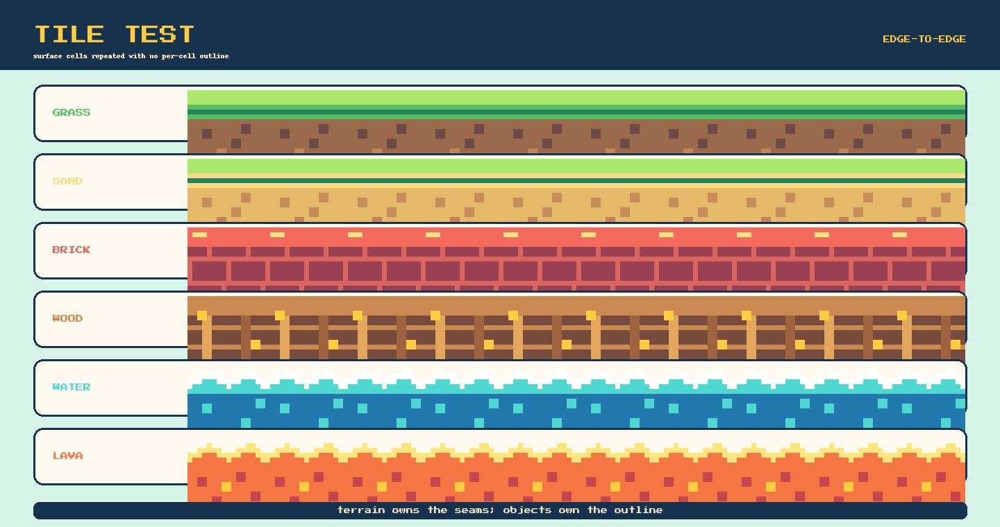
Complete manifest atlas
This is the full review candidate at the live atlas coordinates: every current sprite name has a visible concept, including variants, seams, effects, and application glyphs.
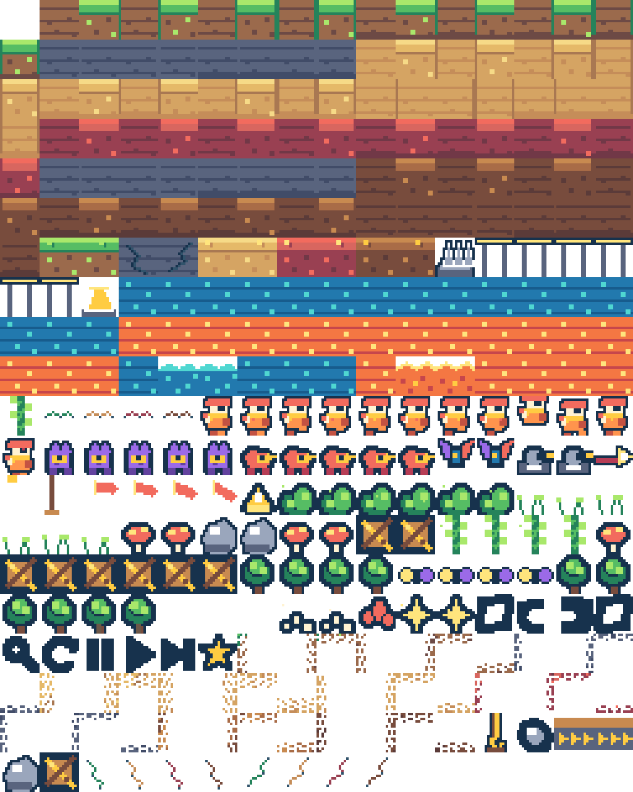
UI kit / reusable language
This is the proposed shared grammar for buttons, tabs, panels, status badges, cards, and the palette.
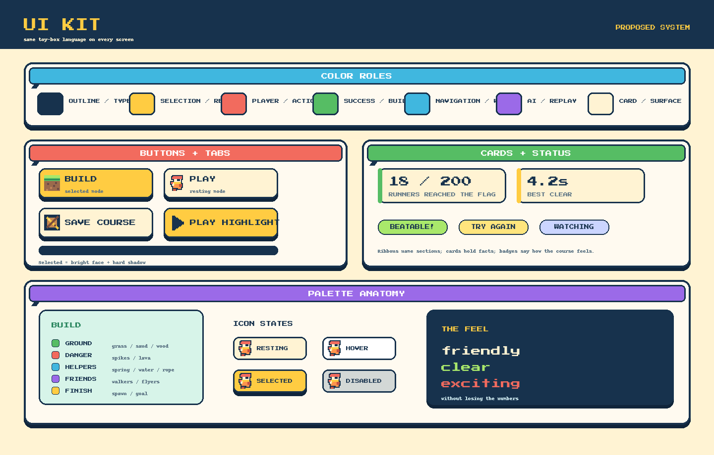
Live build → iteration-2 proposal
The live captures are the current game; the concepts beside them are the earlier proposal, kept for comparison.
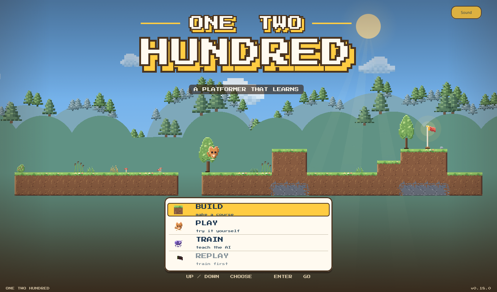
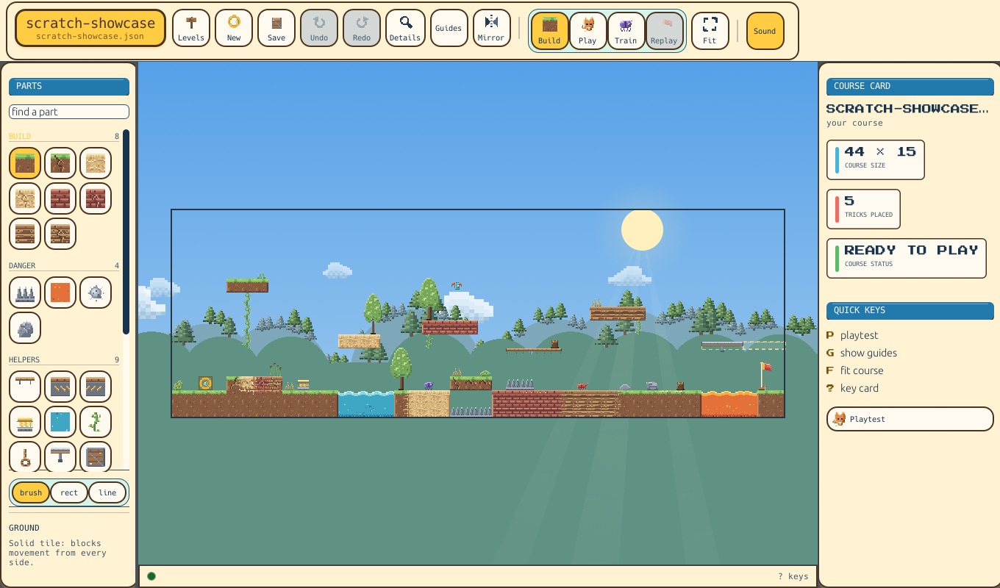